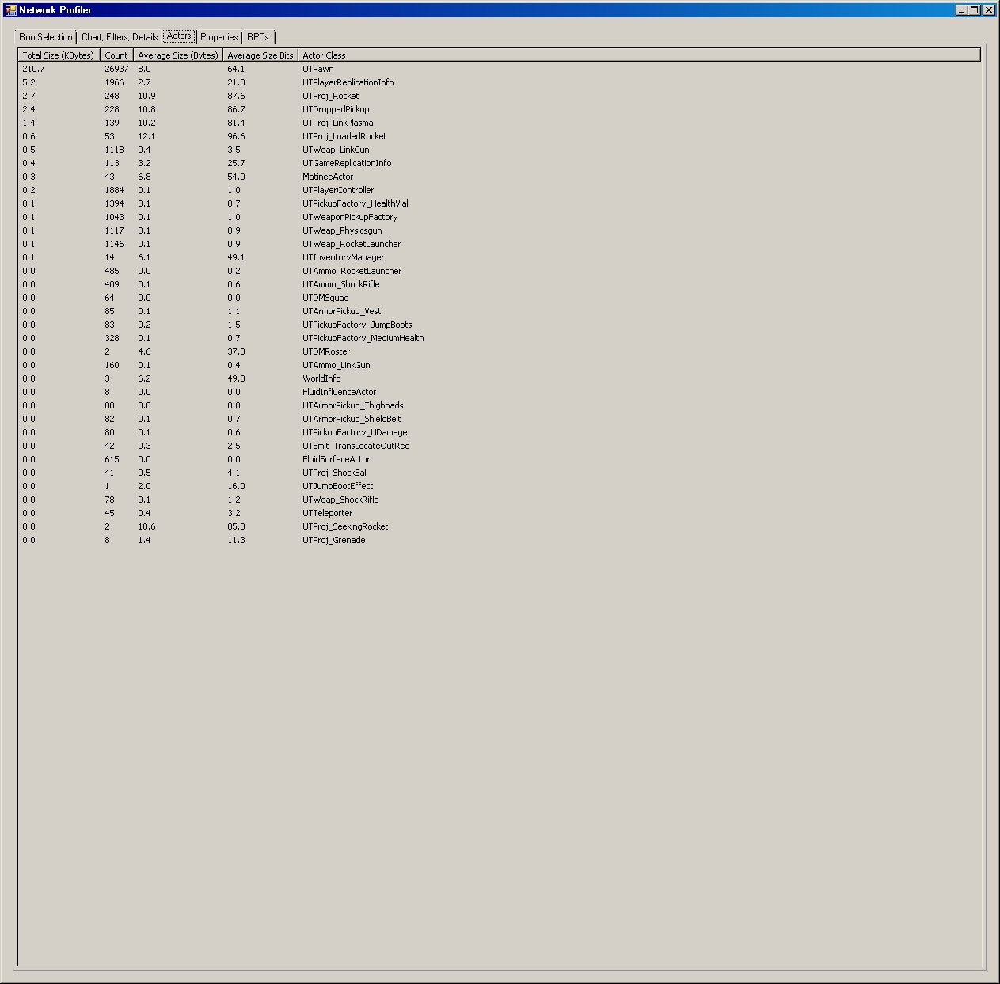
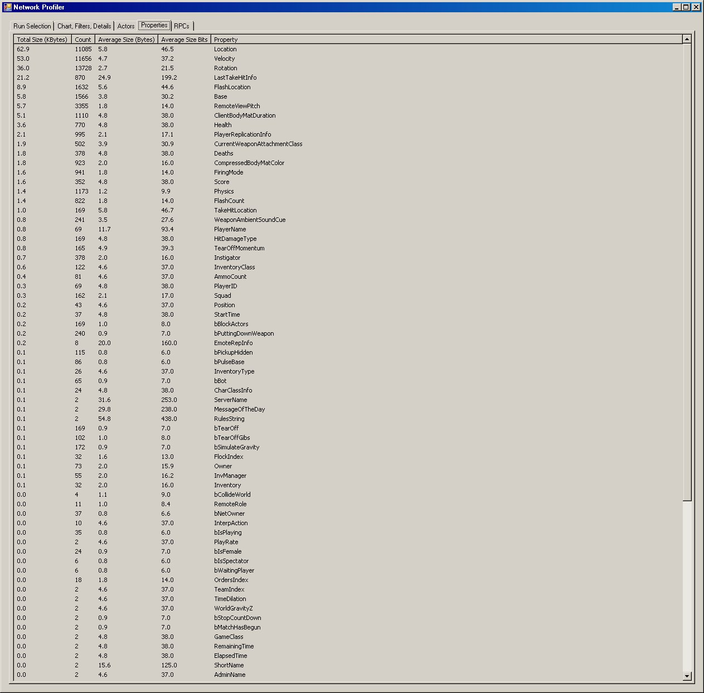

UDN
Search public documentation:
NetworkProfilerKR
English Translation
日本語訳
中国翻译
Interested in the Unreal Engine?
Visit the Unreal Technology site.
Looking for jobs and company info?
Check out the Epic games site.
Questions about support via UDN?
Contact the UDN Staff
日本語訳
中国翻译
Interested in the Unreal Engine?
Visit the Unreal Technology site.
Looking for jobs and company info?
Check out the Epic games site.
Questions about support via UDN?
Contact the UDN Staff
UE3 홈 > 네트워킹과 리플리케이션 > 네트워크 프로파일러
네트워크 프로파일러
문서 변경내역: Daniel Vogel 작성. 홍성진 번역.
개요
독립형 네트워크 프로파일러는, 다양한 네트워크 이벤트용 토큰 스트림을 내뿜는 엔진의 기능에 결합되어 작동하는 C# 응용 프로그램입니다. 주로 서버에서 외부로 출력되는 네트워크 대역폭에 대한 기능이므로 프로파일러에서는 send 와 같은 이벤트만 캡처합니다.요구사항
네트워크 프로파일러 구성에 필수적인 소프트웨어:
토큰을 내뿜도록 언리얼 엔진 셋업
네트워크 프로파일러를 사용하려면, 게임 명령줄에서
-networkprofiler=TAG 를 전달하면 됩니다. 이때 네트워크 데이터가 있으면 토큰을 내뿜기 시작하며, 실행 종료 또는 맵 변경 시 (C:\UDK\UDK-2012-01\UDKGame\Profiling 과 같은) Profiling 폴더에 *.nprof 파일이 작성됩니다.
이렇게 작성되고 잠재적으로 업로드될 수 있는 파일은 Binaries 폴더의 NetworkProfiler.exe를 통해 열리고 추가로 분석됩니다.
네트워크 프로파일러 UI
Run Selection 탭
이 탭에서는 .nprof를 직접 열거나 또는 설정된 경우, 관련 데이터베이스로부터 다양한 실행을 선택할 수 있습니다.Chart, Filter, Details 탭
이 탭은 데이터 스트림을 시각적으로 표현하는 데 사용됩니다. 상단은 차트 영역이며, 그 우측에는 차트로 만들 그래프의 체크박스 목록이 자리합니다. 드래그하여 영역을 선택하면 차트가 확대되며, 기본으로 설정된 X축이 기준이 됩니다. 차트 영역에서 마우스 오른쪽 버튼을 클릭하면 현재 활성화된 축이 토글됩니다. 스크롤바 위에 점이 있는 작은 원을 클릭하면 확대 작업이 취소됩니다. 데이터 요약 창에는 드래그한 최종 선택 영역 또는 단일 클릭으로 선택한 현 프레임에 대한 요약이 표시됩니다. 우측의 텍스트 박스에는 해당 프레임에서 캡처된 네트워크 작업 목록이 모두 표시됩니다. "Apply Filters"를 클릭하면 체크박스의 컨텐츠를 기반으로 표시된된 정보를 액터 필터, 속성 필터, 그리고 RPC 필터에서 필터링합니다. 필터링을 취소하려면 해당 필터를 지우고 "Apply Filters"를 클릭하면 됩니다. 출력되는 대역폭 그래프/요약에는 패킷 오버헤드가 감안된다는 점에 유의하십시오. 이는 플랫폼에 지정된 값이며, 이 값은 NetworkStream.PacketOverhead 설정을 통해 수정할 수 있습니다.
Actors 탭
액터 탭에서는 리플리케이팅된 모든 액터 유형을 표시하고, 리플리케이션 횟수와 사이즈를 요약하여 보여줍니다.
Properties 탭
속성 탭에서는 리플리케이팅된 모든 속성들을 표시하고, 리플리케이션 횟수와 사이즈를 요약하여 보여줍니다.
RPCs 탭
RPCs 탭에서는 리플리케이팅된 모든 RPC를 표시하고, 리플리케이션 횟수와 사이즈를 요약하여 보여줍니다.
캡처된 데이터
프로파일러에 의해 현재 캡처된 데이터로서, 저레벨 FSocket::Send* 이벤트, UChannel::SendBunch, UActor::ReplicateActor 액터/속성 리플리케이션, RPC send, 클라이언트 join/ leave 이벤트, 그리고 프레임 마커가 있는 것들입니다.